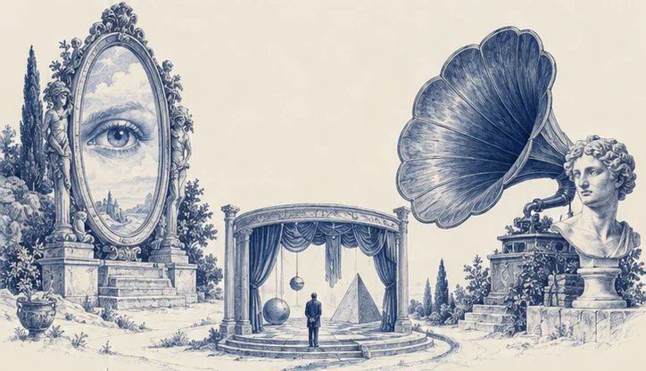
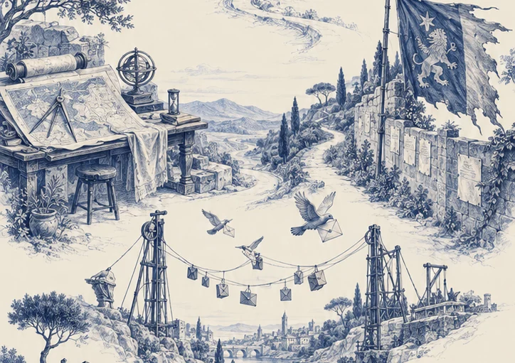

Areas of expertise
perception.
The systems through which a company becomes
seen, understood, remembered and desired.
Index of disciplines
Follow the marks. Inspect what catches your eye.A continuous field guide. Touch a drawing to inspect.
Where the eye arrives

I. The first impression is already an argument.
Brand Image Recognition, before a word is read.
Fig. 01 / The looking glass
The image a company projects sets the terms of every encounter. SeldomSought defines its visual identity, positioning and public presentation so the business is recognisable across every point of contact.
Discuss brand imageAesthetic Orchestration Every element, in the same world.
Fig. 02 / The theatre of appearances
Art direction gives disparate materials a common intention. Image, typography, colour, layout and atmosphere are composed into a visual language that holds together across a website, a campaign and the physical world.
Discuss aesthetic orchestrationBrand Voice A character you can hear in the dark.
Fig. 03 / The echo chamber
A recognisable voice comes from choices repeated with conviction. SeldomSought establishes tone, vocabulary and editorial principles, then puts them to work in the places a business actually speaks.
Discuss brand voiceInstruments for being found
II. What remains unseen cannot be chosen.
SEO Be present where intent begins.
Fig. 04 / The light of intent
Search visibility begins with understanding what people are trying to find. Technical audits, site structure, local presence and useful content make a business easier to discover, with measurement tied to enquiries and commercial intent.
Discuss seoAEO Make the answer traceable to you.
Fig. 05 / The machine observatory
Answer engine optimisation makes a business and its expertise easier for retrieval systems to interpret. Clear entities, structured information and well-supported answers improve the conditions for inclusion and citation; placement is measured, never promised.
Discuss aeoCompetitive Analysis Read the territory before entering it.
Fig. 06 / The distant prospect
Study what competitors offer, how they present it and where customers remain underserved. The result is a practical account of the category: its habits, its openings and the differences worth defending.
Discuss competitive analysisRoutes of circulation

III. A message is only as useful as its passage.
Marketing Strategy Choose the route. Give it a reason.
Fig. 07 / The cartographer’s table
Audience, offer, channel, budget and timing belong in one plan. SeldomSought sets priorities, designs the campaign sequence and defines what to measure, so effort accumulates toward a commercial objective.
Discuss marketing strategyGuerrilla Marketing Attention has unofficial entrances.
Fig. 08 / The unofficial passage
Find the places where an unexpected intervention earns attention. From a physical activation to an unconventional distribution tactic, each idea is built around context, participation and a clear next step.
Discuss guerrilla marketingEmail Marketing Correspondence that earns its return.
Fig. 09 / The correspondence works
A useful email programme gives each message a job. Segmentation, welcome sequences, campaign writing and reactivation turn an existing audience into an ongoing relationship, with performance judged beyond the open rate.
Discuss email marketingWhat carries the work
IV. The promise rests on something built.
SMS Marketing A direct line. Used with restraint.
Fig. 10 / The immediate signal
Text is reserved for messages whose timing matters. SeldomSought develops opt-in campaigns and lifecycle messages with clear offers, considered frequency and an easy path from notification to action.
Discuss sms marketingBusiness Consulting Build what the promise depends on.
Fig. 11 / The supporting structure
A compelling proposition needs a business that can deliver it. SeldomSought examines workflows, customer handoffs and operating priorities, then implements practical changes to the systems carrying the work.
Discuss business consultingCopywriting The right words carry weight.
Fig. 12 / The printing works
Good copy makes a proposition clear, credible and worth acting on. Websites, campaigns and sales materials are written around the reader’s questions, the evidence available and the decision the business needs to earn.
Discuss copywritingAt the far edge of the map
Nothing here
works alone.
Image gives language a face. Language gives strategy a voice.
The work is making the connections.